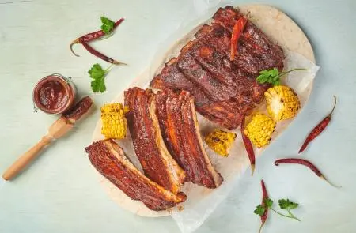
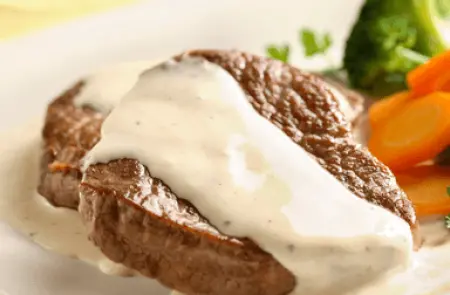
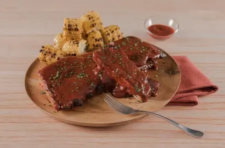

Explora las nuevas recetas de Aves

Sliders de picaña de res ahumada
Sliders de picaña de res ahumada
Ingredientes:
- 4 Cucharadas Azúcar rub, mascabado
- 2 Cucharaditas Ajo rub, deshidratado
- 2 Cucharadas Cebolla rub, deshidratada
- 2 Cucharadas Comino rub
- 2 Cucharadas Pimienta de cayena rub, paprika
- 2 Cucharadas Pimienta negra rub, molida
- 1 Cucharada Sal rub, en grano
- 1 Kilogramo Carne de ternera rub, corte picaña
- 1/2 Taza Aceite de oliva rub
- 1 Pieza Cebolla morada ensalada, en rodajas
- 1/2 Taza Cilantro fresco ensalada, desinfectado
- 1/2 Pieza Lima ensalada, en gajos
- 200 Gramos Zanahorias ensalada, rallada
- 1 Cucharada Aceite de oliva ensalada
- 4 Cucharadas Pimienta negra molida
- 1/2 Botella Salsa bbq aderezo, 200 g
- 2 Cucharadas Sazonador Líquido MAGGI® aderezo
- 2 Cucharadas Salsa Tipo Inglesa CROSSE & BLACKWELL® aderezo
- 4 Piezas Pan para hamburguesa aderezo, bollos pequeños
- 1/2 Taza Mayonesa aderezo
¡A cocinar!
- Prepara tu asador Weber® para fuego alto indirecto (450 °F a 550 °F / 230 °C a 290 °C).
- Para el rub, mezcla el azúcar, el ajo, la cebolla, el comino, la pimienta y la sal. Con un cuchillo, retira el exceso de grasa de la picaña sin llegar al músculo, dejando una capa delgada de grasa. Barniza tu picaña con aceite de oliva, y cúbrela generosamente con el rub. Déjala reposar durante 30 minutos antes de asarla.
- Para la ensalada, mezcla la cebolla, el cilantro, la lima, la zanahoria, el aceite y la pimienta. Para el aderezo mezcla la salsa BBQ, el Sazonador Líquido MAGGI® y la Salsa Tipo Inglesa CROSSE & BLACKWELL®.
- Coloca los chips directamente en el carbón. Si estás trabajando con un asador de gas Weber®, agrégalas a tu caja de ahumado Weber® Original™ y colócala sobre la parrilla de cocción de 10 a 15 minutos o hasta que comiencen a ahumar. Coloca la picaña con la grasa hacia arriba a fuego indirecto con la tapa puesta, durante 20 minutos. Pasado este tiempo, agrega otro puñado de chips y rota el corte a 180°, con la grasa aún hacia arriba. Ásala con la tapa puesta 25 minutos más.
- Cuando la temperatura interna de la picaña llegue a los 140 °F a 145 °F / 60 °C a 62 °C, retira la picaña del asador Weber®, cúbrela con papel aluminio y déjala reposar de 10 a 20 minutos para que los jugos se redistribuyan. En este tiempo la temperatura interna de la carne subirá de 5 °C a 10 °C. Rebana la picaña perpendicularmente a las fibras musculares, asegurándote de que el corte sea delgado. Calienta tu pan en el asador, úntalo con mayonesa y agrega las rebanadas de picaña. Agrega salsa al gusto y un poco de ensalada.

Arrachera Marinada de Mostaza
Arrachera Marinada de Mostaza
Ingredientes:
- 2 Cucharadas de Jugo MAGGI®
- 2 Cucharadas de Salsa Tipo Inglesa CROSSE & BLACKWELL®
- 1 Chile jalapeño picado finamente
- 3 Cucharadas de mostaza antigua
- 2 Cucharadas de ajo picado finamente
- 1/2 Cucharadita de pimienta negra molida
- 800 Gramos de arrachera
- 2 Manojos de cebolla cambray cortados por la mitad
- 1 Cucharada de aceite vegetal
¡A cocinar!
- Mezcla el Jugo MAGGI®️, la Salsa Tipo Inglesa CROSSE & BLACKWELL®, el chile, la mostaza antigua, el ajo, la pimienta, la arrachera y las cebollas cambray; cubre con plástico adherente y marina en refrigeración por 1 hora.
- Calienta el aceite y cocina la arrachera por ambos lados con las cebollitas hasta que estén cocidas.
- Sirve y acompaña con frijoles de la olla. Ofrece.

Costillas de Cerdo en Adobo
Costillas de Cerdo en Adobo
Ingredientes:
- 2 Cucharadas de Jugo MAGGI®
- 2 Cucharadas de Salsa Tipo Inglesa CROSSE & BLACKWELL®
- 6 Chiles de árbol secos
- 1 1/2 Tazas de agua
- 4 Jitomates asados
- 1/4 De pieza de cebolla asada
- 3 Cucharadas de Kirkland Signature® Ajo picado
- 1 Cucharadita de Pimienta Negra Molido Grueso de Malabar KIRKLAND SIGNATURE
- 2 Cucharadas de consomé de pollo en polvo
- 1 Kilogramo de costilla de cerdo
- 3 Tazas de agua
- 1 Cucharadita de sal con cebolla en polvo
¡A cocinar!
- Licúa el Jugo MAGGI® con la Salsa Tipo Inglesa CROSSE & BLACKWELL®, los chiles de árbol, el agua, los jitomates, la cebolla, el Kirkland Signature Ajo Picado, la Kirkland Signature Pimienta Negra Molida, el consomé de pollo y reserva.
- Coloca las costillas de cerdo en una olla con el agua y la sal con cebolla. Tapa y cocina durante 60 minutos a fuego medio o hasta que las costillas estén cocidas y suaves.
- Vierte la salsa en la olla con las costillas y cocina por 10 minutos a fuego medio. Sirve y ofrece.
Calabazas con Arrachera y Queso
Calabazas con Arrachera y Queso
Ingredientes:
- 400 Gramos de arrachera cortada en cubos pequeños
- 3 Cucharadas de Jugo MAGGI®
- 3 Cucharadas de Salsa Tipo Inglesa CROSSE & BLACKWELL®
- 2 Calabazas cortadas a la mitad y de forma horizontal
- 200 Gramos de queso tipo manchego rallado
¡A cocinar!
- Cocina la arrachera con el Jugo MAGGI®, la Salsa Tipo Inglesa CROSSE & BLACKWELL® hasta que dore ligeramente.
- Rellena las mitades de calabaza con la preparación anterior y un poco de queso, ásalas en una sartén, tapa y cocina hasta que gratine el queso. Y ofrece.

Medallones en salsa de pimienta
Medallones en salsa de pimienta
Ingredientes:
- 2 Cucharadas Mantequilla
- 2 Cucharadas Cebolla picada
- 2 Cucharadas Cebolla picada
- 1/2 Pieza Ajo mediano, picado
- 3 Cucharadas Harina de trigo
- 2 Tazas Leche Evaporada CARNATION® CLAVEL®
- 2 Cucharadas Pimienta blanca
- 1 1/2 Cucharada *Consomé de pollo en polvo
- 8 Piezas Filete de res medallones fritos
¡A cocinar!
- Calienta la mantequilla y sofríe la cebolla con el ajo; agrega la harina y mezcla hasta formar una pasta de color dorado claro. Reserva.
- Licúa la Leche Evaporada CARNATION® CLAVEL® con la cebolla frita, la pimienta, el agua y el consomé de pollo; cocina de 10 a 15 minutos o hasta que espese o tome una consistencia cremosa. Mueve constantemente para evitar que se pegue. Retira del fuego y cuela.
- Sírve los medallones recién hechos con la salsa caliente; acompaña con verduras.

Costillas a Los Tres Chiles
Costillas a Los Tres Chiles
Ingredientes:
- 2 Cubos de Concentrado de Tomate con Pollo CONSOMATE®
- 4 Chiles de árbol, secos y fritos
- 4 Chiles guajillo, sin semillas y remojados en agua caliente
- 1 Chile ancho, sin semillas y remojado en agua caliente
- 1 Taza de agua
- 1/4 Pieza de cebolla, en trozo
- 1 Diente de ajo
- 1/2 Kilo de costillas de cerdo, limpias
- 2 Ramas de perejil, desinfectado y picado finamente
¡A cocinar!
- Horno precalentado a 180 ºC
- Licúa el Concentrado de Tomate con Pollo CONSOMATE®, los chiles, el agua, la cebolla y el ajo; cuela. Vierte la mitad de lo que licuaste sobre las costillas, cubre con plástico adherente y refrigera por 2 horas.
- Coloca las costillas sobre una charola con papel encerado y hornea a 180 °C por 25 minutos, con ayuda de unas pinzas voltéalas y cocina 25 minutos más. Calienta la salsa restante hasta que espese ligeramente moviendo ocasionalmente.
- Sirve las costillas, baña con un poco de salsa y decora con el perejil. Ofrece.
Suscríbete a Nuestro Newsletter
¡Registro Exitoso!
¡Felicidades, te has registrado con éxito! Ahora recibirás nuestras recetas primero.